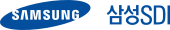

설립연도
1970년

전기차와 에너지저장장치(ESS), 전동공구·전자기기에 들어가는 배터리를 만드는 회사예요. 원래 TV 브라운관을 만들던 회사였는데, 2000년 무렵부터 배터리로 사업을 바꿨어요. 2025년에는 전기차 수요 둔화로 매출 13.3조 원, 영업손실 1.7조 원을 기록했고, 미국 데이터센터용 ESS 판매가 늘면서 2026년 3분기에 다시 흑자로 돌아섰어요.
칸에 마우스를 올리거나 누르면 자세한 설명을 볼 수 있어요.
주로 납작한 상자 모양의 "각형" 배터리를 만들어 BMW 등 유럽 자동차 회사에 공급해요. 미국에서는 스텔란티스, GM과 함께 합작 공장을 짓고 있어요.
대표 예각형 배터리, 스텔란티스·GM 합작 공장
전기를 저장했다가 필요할 때 쓰는 대형 배터리 설비예요. 미국 데이터센터·전력망 수요가 늘면서 가장 기대를 받는 사업이에요.
대표 예삼성 배터리 박스(SBB), 전력망용 ESS
전동공구, 전기자전거, 무선청소기 등에 들어가는 원통형 배터리예요. 이 분야에서 세계 상위권이에요.
대표 예원통형 배터리 (2170 등)
반도체와 디스플레이를 만들 때 쓰는 화학 소재를 만들어요. 2014년 제일모직의 소재 사업을 합치면서 시작했어요.
대표 예반도체 공정 소재, OLED 소재
| 기간 | 매출 | 영업이익 | 순이익 |
|---|
사업마다 겨루는 상대가 달라요